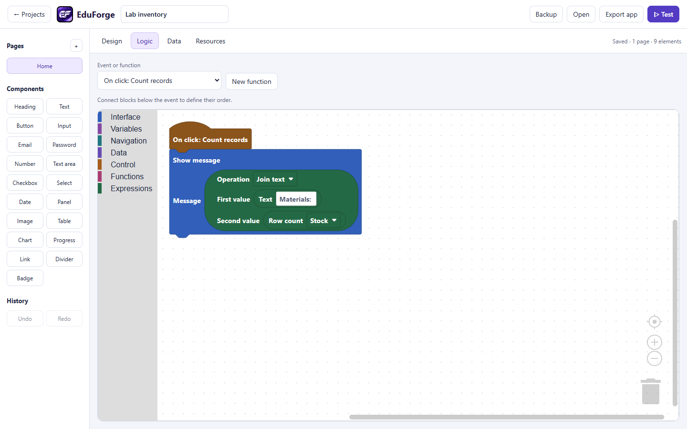

Events and blocks
Connect the Save button to an action and verify that it runs.
Create the event
- Select the Save button and choose Edit logic.
- Select that button's On click event.
- Drag Show message from Interface and connect it below the event block.


Check the flow
Enter Material recorded as your test message. Choose Test and click Save in your app. If nothing happens, check that the block is attached to the correct button event.
Add a condition
Use If / else to choose which actions run based on a condition. Connect the actions for each case to its branch.